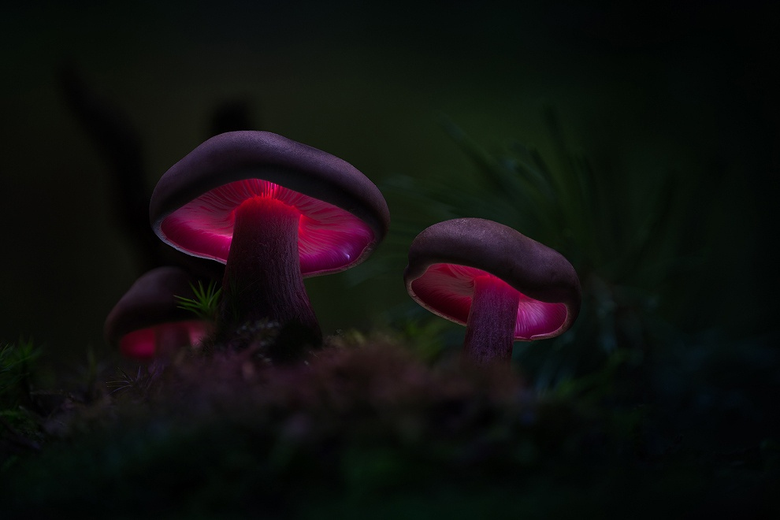

<!--<button mat-button type="button" (click)="openPredictWindow()">check my mushroom</button>-->
  <mat-grid-list class="items_list"cols="2" rowHeight="100px">

  <mat-grid-tile class="img-wrapper" colspan="2" rowspan="2" >
    <mat-chip> MyShroom</mat-chip>
        
  </mat-grid-tile>

  <mat-grid-tile colspan="2" rowspan="4" id="myMapGridTile">
    <google-map [center]="center"
              [zoom]="zoom" [width]="this.width!" height="400px"
              [options]="myOptions" id="myMap">
      <map-marker *ngFor="let marker of this.markers" [position]="{lat:marker.lat, lng:marker.lng}">
      </map-marker>
    </google-map>
  </mat-grid-tile>

  <mat-grid-tile  class="post_tile"colspan="2" rowspan="5" *ngFor="let post of this.posts ">
    <app-post [post]="post"></app-post>

  </mat-grid-tile>

  <mat-grid-tile colspan="2" rowspan="1">
    <button mat-button type="button"  (click)="signOut()">Sign Out</button>
  </mat-grid-tile>

  </mat-grid-list>

